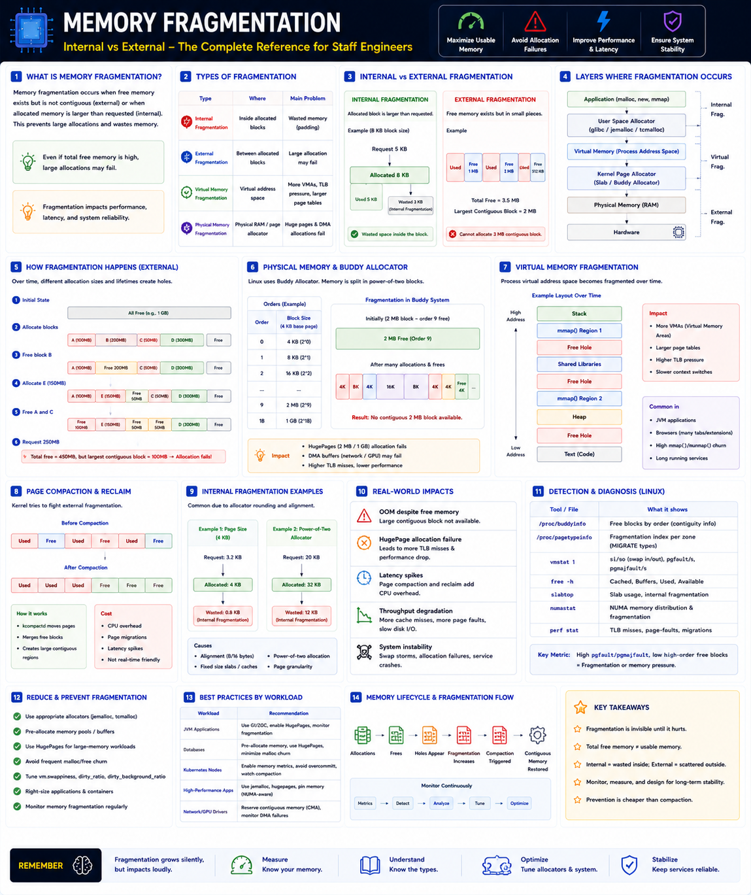

Internal vs External — Staff Engineer level
The Big Picture
Staff Engineers don't just think about how much memory is free — they think about whether the free memory is usable.
A system can report Free Memory = 8 GB and still fail a large allocation — because the free memory is no longer contiguous.
After millions of allocations and frees, memory becomes scattered into many small holes regardless of the total free space.
Types of Memory Fragmentation
| Type | Where | Main Problem |
|---|---|---|
| Internal | Inside allocated blocks | Wasted memory |
| External | Between allocated blocks | Large allocations fail |
| Virtual | Virtual Address Space | More page tables & TLB pressure |
| Physical | Physical RAM | Huge Pages & DMA failures |
Internal Fragmentation
Occurs when the allocator reserves more memory than requested — the excess is wasted inside the block.
Why it happens
Across millions of allocations this wasted space becomes significant.
External Fragmentation
Occurs when free memory exists but is scattered into many small pieces — large allocations fail even though total free memory is sufficient.
Caused by continuous malloc() / free() / mmap() / munmap() with different object lifetimes.
Internal vs External — Side by Side
| Feature | Internal | External |
|---|---|---|
| Wasted space | Inside allocated block | Between allocated blocks |
| Root cause | Alignment & fixed sizes | Allocation/free patterns |
| Large allocation | Usually succeeds | May fail |
| Recovery | Difficult | Page compaction |
Buddy Allocator (Physical RAM)
Linux allocates physical memory in power-of-two blocks. After months of allocations, large contiguous regions disappear.
After fragmentation:
Linux Memory Allocation Pipeline
Fragmentation can occur at every layer of this pipeline.
Page Compaction
Linux periodically migrates pages to restore contiguous free regions. The kernel daemon kcompactd runs this process.
Before
After Compaction
Benefits
Costs
Huge Pages & Fragmentation
Huge Pages require contiguous physical memory. Fragmented memory causes Huge Page allocation failures.
| Page Type | Size | Contiguous RAM Required |
|---|---|---|
| Normal Page | 4 KB | 4 KB |
| Huge Page | 2 MB | 2 MB contiguous |
| Gigantic Page | 1 GB | 1 GB contiguous |
Failure → more page table entries → more TLB misses → higher memory latency.
Real-World Examples
| System | Fragmentation Path | Impact |
|---|---|---|
| JVM | GC compacts heap; native malloc fragments system memory | Huge Page failures, NUMA imbalance, higher latency |
| PostgreSQL | Months of allocs fragment buddy allocator | Huge Page allocation fails → lower query perf |
| Kubernetes | Container start/stop repeatedly allocates and frees memory | kcompactd active → latency spikes |
Detecting Fragmentation
| Tool | Purpose |
|---|---|
/proc/buddyinfo | Free blocks by allocation order |
/proc/pagetypeinfo | Fragmentation index |
slabtop | Slab allocator usage |
numastat | NUMA fragmentation |
vmstat | Page compaction & paging |
perf | Page migration overhead |
Staff Engineer Thinking
Junior
How much free memory do we have?
Senior
Why did the allocation fail?
Staff asks
kcompactd consuming CPU?Production Failure Scenarios
Huge Page Allocation Failure
Cause: Physical memory fragmented · Fix: Preallocate Huge Pages or trigger compaction
OOM Despite Free Memory
Cause: Large contiguous allocation unavailable · Fix: Check /proc/buddyinfo for external fragmentation
Latency Spikes
Cause: Kernel page compaction running · Fix: Reduce allocation churn or preallocate buffers
Kubernetes Node Performance Drop
Cause: Container lifecycle fragments memory · Fix: Enable Huge Pages, tune compaction, monitor buddy allocator
Staff Engineer Decision Framework
| Scenario | Recommended Approach |
|---|---|
| Long-running JVM | Huge Pages + NUMA-aware settings |
| Database server | Preallocate shared buffers |
| High-performance cache | jemalloc / tcmalloc |
| Kubernetes | Monitor buddy allocator & compaction |
| Network drivers | Reserve contiguous DMA memory |
| Large memory workloads | Reduce allocation churn |
Fragmentation Lifecycle
Production Debugging Checklist
/proc/buddyinfo for large free blocksvmstat, perf)numastat)jemalloc, malloc_info())Key Takeaways
